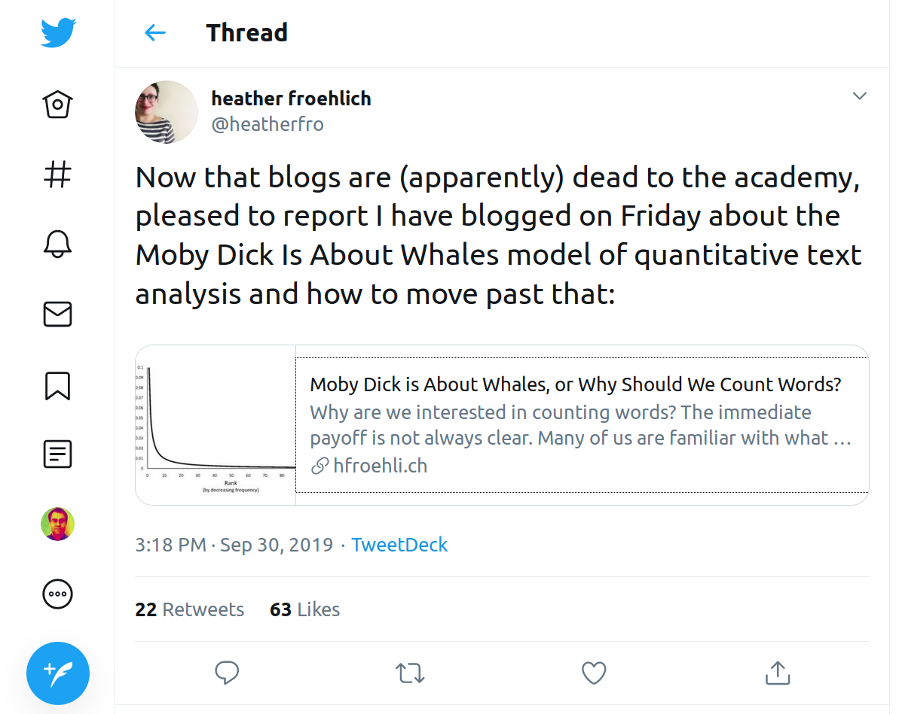
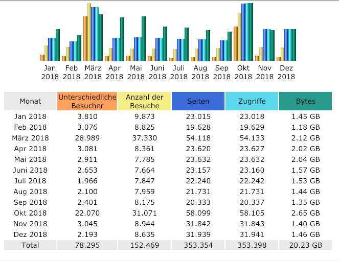
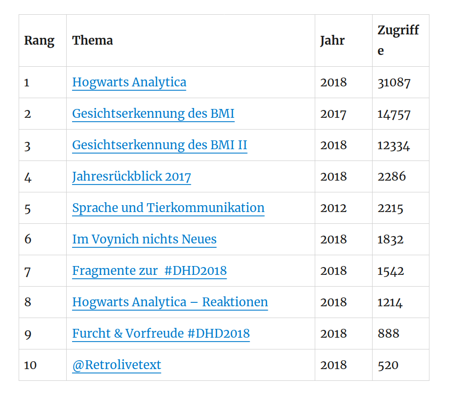
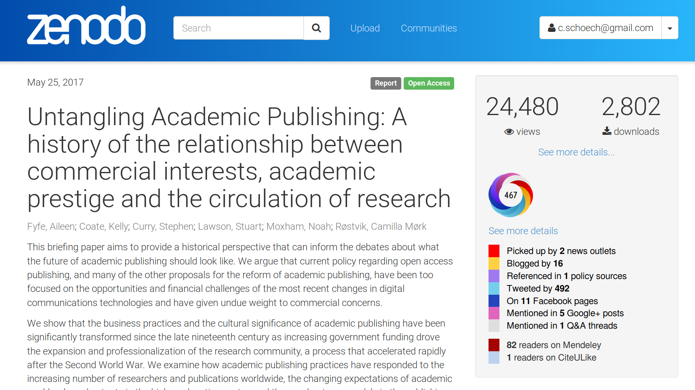
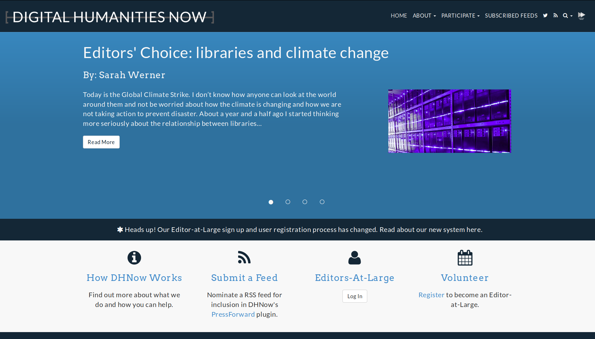
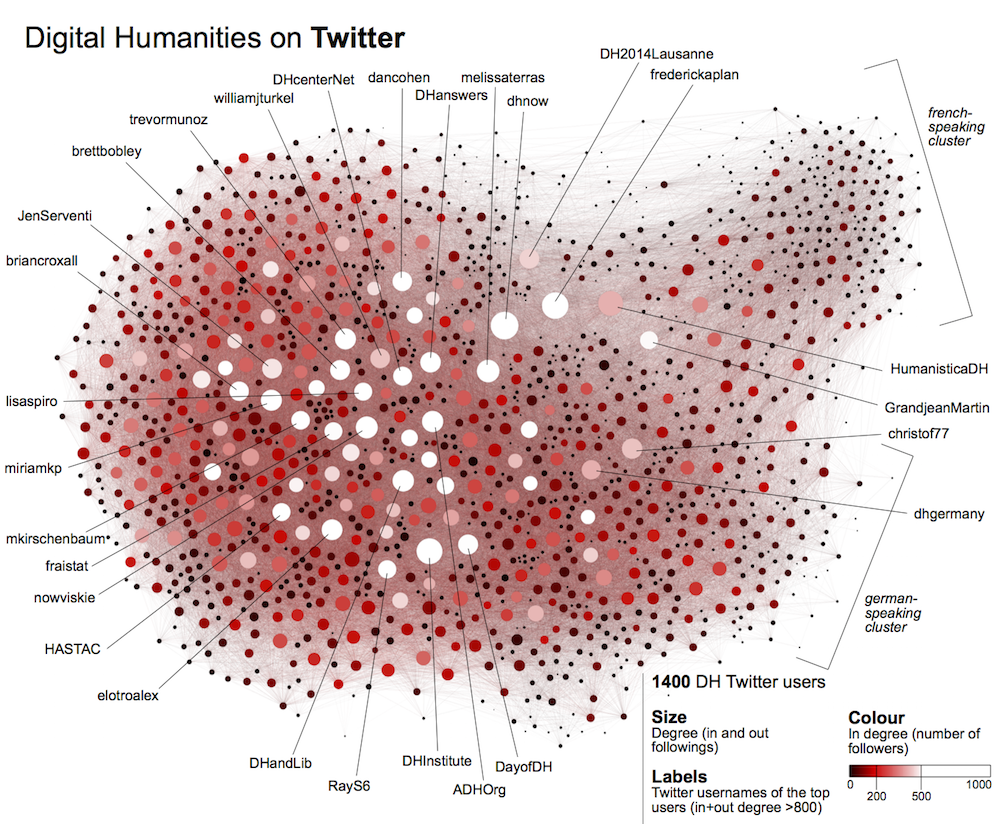
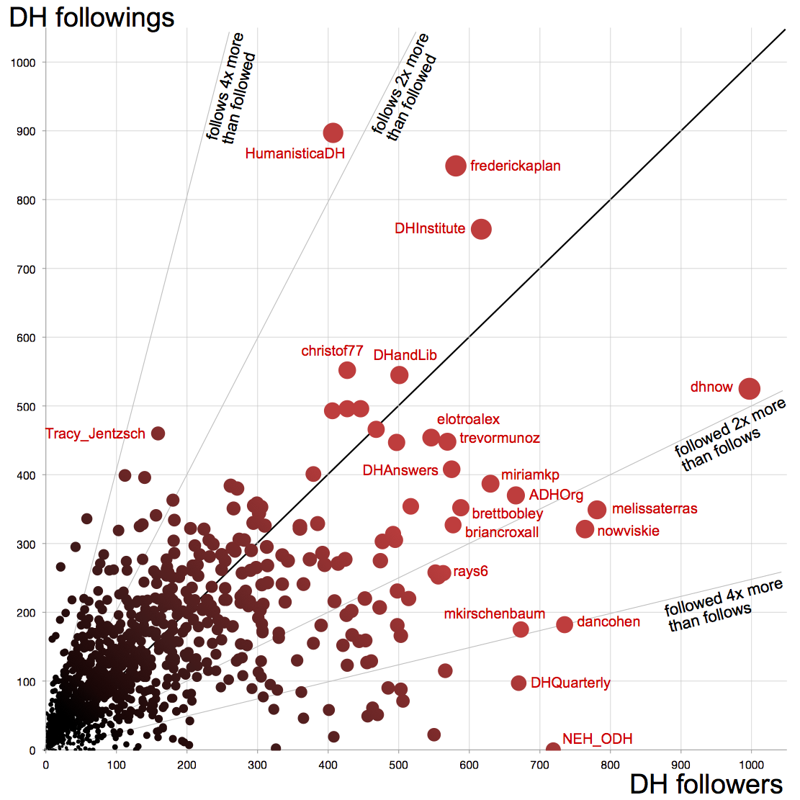
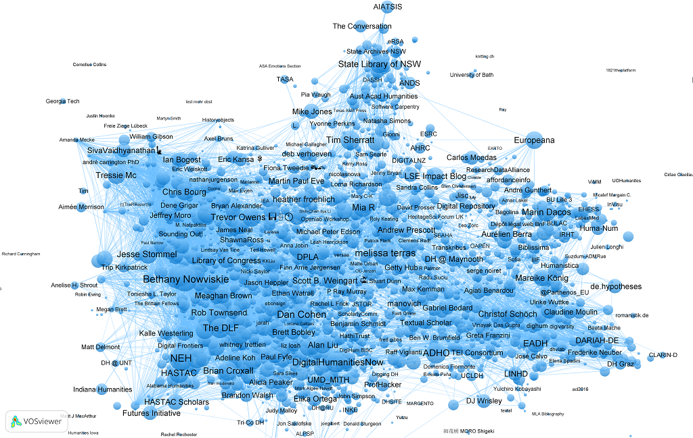

<!doctype html>
<html lang="en">
<head>
<meta charset="utf-8">
<!-- CUSTOMIZE THIS! -->
<title>Bloggen und Twitter in den Digital Humanities</title>
<meta name="author" content="Christof Schöch">
<!-- END -->
<meta name="description" content="Slides">
<meta name="apple-mobile-web-app-capable" content="yes">
<meta name="apple-mobile-web-app-status-bar-style" content="black-translucent">
<meta name="viewport" content="width=device-width, initial-scale=1.0, maximum-scale=1.0, user-scalable=no, minimal-ui">
<link rel="stylesheet" href="css/reveal.css">
<link rel="stylesheet" href="css/theme/simple.css" id="theme">
<!-- Code syntax highlighting -->
<link rel="stylesheet" href="lib/css/zenburn.css">
<!-- Printing and PDF exports -->
<script>
var link = document.createElement( 'link' );
link.rel = 'stylesheet';
link.type = 'text/css';
link.href = window.location.search.match( /print-pdf/gi ) ? 'css/print/pdf.css' : 'css/print/paper.css';
document.getElementsByTagName( 'head' )[0].appendChild( link );
</script>
<!--[if lt IE 9]>
<script src="lib/js/html5shiv.js"></script>
<![endif]-->
</head>

<body>
<div class="reveal">
<div class="slides">
<section data-markdown="" data-separator="^\n---\n" data-separator-vertical="^\n--\n" data-charset="utf-8" data-background-image="img/basics/uni-trier-icon.png" data-background-size="50px" data-background-position="top 10px right 10px">
<script type="text/template">

<!-- THIS IS WHERE THE CONTENT GOES! -->
<!-- Any section element inside of this container is displayed as a slide -->

##Outreach-Formate:<br/>Blogs und Micro-Blogs in den DH
<br/>
<hr/>
<br/>
Christof Schöch (Trier)
<br/>https://dh.uni-trier.de/
<br/>
<br/>
**Neue digitale Formate für die Forschung**
<br/>**Allianz-AG 8, Bonn, 1. Okt. 2019**
<br/>
<hr/>
<br/>
</img>


---
<br/>
##Blogs und Micro-Blogs in den DH
<br/>
<br/>
1. [Wissenschaftliches Bloggen](#/1)
1. [Micro-Blogging: Twitter](#/2)


--
## Blogs und Twitter
<a href="img/heatherfro.png"></a>
<br/>@heatherfro, 30.9.2019<br/>https://twitter.com/heatherfro/status/1178660507647139840

---
<br/>
<br/>
# 1. Wissenschaftliches Bloggen

--
## Eigenschaften von Blogs
<br/>
* frei zugänglich (aber: Lizenzfrage) <!-- .element: class="fragment" data-fragment-index="1" -->
* schnell publiziert und aktualisiert (aber: Zitierbarkeit) <!-- .element: class="fragment" data-fragment-index="2" -->
* Desintermediation (aber: Plattformeffekte, Redaktionen) <!-- .element: class="fragment" data-fragment-index="3" -->
* kein peer-review (aber: Redaktionen, Kommentare, Aggregatoren) <!-- .element: class="fragment" data-fragment-index="4" -->
* individuelle oder kollektive Blogs (Projektblogs, Themenblogs, Seminarblogs, etc.) <!-- .element: class="fragment" data-fragment-index="5" -->
* aktualitätsbezogen: Veranstaltungen, Publikationen, Ideen, Interventionen <!-- .element: class="fragment" data-fragment-index="6" -->

--
## Funktionen wissenschaftlicher Blogs
<br/>
* Registrierungsfunktion: neue Ideen früh dokumentieren <!-- .element: class="fragment" data-fragment-index="2" -->
* Feedbackfunktion: auf Probleme aufmerksam werden, bevor man ein Paper schreibt <!-- .element: class="fragment" data-fragment-index="3" -->      
* Lernfunktion: publikumsorientiertes, wissenschaftliches Schreiben praktizieren <!-- .element: class="fragment" data-fragment-index="4" -->
* Resonanzfunktion: Blogs (& Twitter) als "echo chamber" für formale Publikationen (Vernetzung) <!-- .element: class="fragment" data-fragment-index="5" -->
* Identitätsprojektion: Blogs (& Twitter) für "digitalen Identität" <!-- .element: class="fragment" data-fragment-index="6" -->


--
## Verwandschaftsbeziehungen 
<br/>
1. Labortagebuch<br/>aber: informeller, öffentlich, unregelmäßiger <!-- .element: class="fragment" data-fragment-index="1" -->
2. wissenschaftliche Artikel<br/>aber: kürzer, kleiner, schneller, persönlicher, dialogischer, kein peer review  <!-- .element: class="fragment" data-fragment-index="2" -->
3. Austausch und Networking bei Konferenzen<br/>aber: schriftlich, orts- und zeitungebunden  <!-- .element: class="fragment" data-fragment-index="3" -->

--
## Stellenwert: Hecker-Stampehl 2013
<br/>
>"Knowledge sharing über Blogs ist indes momentan noch kein voll akzeptierter Baustein zum Aufbau sozialen Kapitals in der Wissenschaftslandschaft. Meine Prognose ist, dass ein eigener Fachblog oder die Beteiligung an einem wissenschaftlichen Gruppenblog über kurz oder lang für viele (nicht alle) zum Portfolio dazugehören wird."


--
## Legitimität durch Forschung
<br/>
<small>
    
* Torill Mortensen & Jill Rettberg Walker. 2002. "Blogging Thoughts. Personal Publication as an Online Research Tool. In: *Researching ICTs in Context*. 
* Jill Walker Rettberg. 2008. *Blogging*. London: Polity. 
* Sara Kjellberg. 2010. "I am a blogging researcher: motivations for blogging in a scholarly context". *First Monday* 15.8. https://firstmonday.org/article/view/2962/2580
* Cornelius Puschmann & Merja Mahrt. "Scholarly Blogging: A New Form of Publishing or Science Journalism 2.0?". In: *Science and the Internet*, ed. A. Tokar et al., 171-181. Düsseldorf: Düsseldorf University Press. 
* Peter Haber & Eva Pfanzelter, Hg. 2013. *historyblogosphere. Bloggen in der Geschichtswissenschaften*. Berlin: De Gruyter. https://www.degruyter.com/viewbooktoc/product/216968 
* Mareike König. 2019. "Strategische Kommunikation: wie Geisteswissenschaftler*innen bloggen. Ergebnisse der Umfrage bei de.hypotheses". Redaktionsblog. https://redaktionsblog.hypotheses.org/4246

</small>


--
## Legitimität durch Zahlen
<br/>
<a href="img/hermes1.png"></a>&nbsp;&nbsp;<a href="img/hermes2.png"></a>
<br/>
<br/>
* Jürgen Hermes, https://texperimentales.hypotheses.org
* Seitenzugriffe insgesamt: 350k in einem Jahr
* Top-Post ("Hogwarts Analytica"): 31k Zugriffe

--
## Stellenwert: Verbreitung
<a href="https://de.hypotheses.org"></a>&nbsp;&nbsp;<a href="https://dhd-blog.org"></a>
<br/>
<br/>
* DHd-Blog: 1425 Posts in etwa 8 Jahren (15 / Monat)
* de.hypotheses.org: etwa 250 dt. Blogs (von 3100) 

--
## Zitierbarkeit, Qualitätssicherung, Impact
<a href="img/altmetrics.png"></a>&nbsp;&nbsp;<a href="img/dhnow.png"></a>

<br/>
* Rolle in Altmetrics (bspw. Zenodo): Posts und Tweets!
* post-publication review: DH Now (selektiver Aggregator)
* Vergabe von ISSN, Archivierung durch die DNB
* Reputation: weiter Diskussionsthema

--
## Stellenwert (persönlich) 
<br/>
* Meine ersten Schritte in den DH waren Blog-Posts
* mein meist-zitierter Artikel begann als Blog-Post (DHNow, JDH)
* Bloggen (und Twitter, Zotero, Github) produzieren DH "street credibility" 


--
## Entwicklungsbedarf
<br/>
* Versionierung und Archivierung stabiler Fassungen mit DOI (=> Zitierbarkeit)
* Etablierung erweiterter Publikationslisten: Datensätze, Software, Blog(post)s


---
<br/>
<br/>
# 2. Micro-Blogging:<br/>Twitter

--
## Legitimation durch Wissenschaft
<br/>
<small>

* Ross, Claire, Melissa Terras, and A. Welsh. “Enabled Backchannel: Conference Twitter Use by Digital Humanists.” Journal of Documentation 67, no. 2 (2011): 214–37.
* Quan-Haase, Anabel, Kim Martin, and Lori McCay-Peet. “Networks of Digital Humanities Scholars: The Informational and Social Uses and Gratifications of Twitter.” Big Data & Society 2, no. 1 (June 10, 2015): 205395171558941. https://doi.org/10.1177/2053951715589417.
* Grandjean, Martin. “A Social Network Analysis of Twitter: Mapping the Digital Humanities Community.” Edited by Aaron Mauro. Cogent Arts & Humanities 3, no. 1 (April 15, 2016). https://doi.org/10.1080/23311983.2016.1171458.
* Jin Gao. 2018. "Visualising The Digital Humanities Community: A Comparison Study Between Citation Network And Social Network". *Digital Humanities Conference 2018*, Mexico City. https://dh2018.adho.org/en/visualising-the-digital-humanities-community-a-comparison-study-between-citation-network-and-social-network/

</small>

--
## Legitimation durch Zahlen: Twitterverse
<a href="img/grandjean1.png"></a>&nbsp;&nbsp;<a href="img/grandjean2.png"></a>&nbsp;&nbsp;<a href="img/gao1.png"></a>
* DH-Accounts: 2015: 2500 Accounts (Grandjean); 2018: 3160 Accounts (Gao ) 
* Konferenzen: DH2018: 2329 Accounts, DH2019: 2157 Accounts (Priego 2019)
* Followerpower: @dancohen 19k, @melissaterras 16.8k, @nowviskie 13.5k


--
## Stellenwert: Hecker-Stampehl (2013)
<br/>
>"Die Kürze eines Tweets oder eines Postings in Facebook, Google+ etc. reicht für eine ausführlichere Auseinandersetzung mit Inhalten kaum aus. Die unter internetaffinen Wissenschaftlern zunehmend beliebte Plattform Twitter dient als Verweismedium jedoch dazu, auf Blogbeiträge aufmerksam zu machen und Diskussionen anzustoßen."

--
## Stellenwert (persönlich)
<br/>
* Wichtige Quelle neuester Informationen:<br/>Publikationen, Stellen, Stellenbesetzungen, Events, Calls
* Kontakte für Vorträge, Publikationen, etc.
* in Würzburg haben wir eine Stelle über Twitter besetzt
* Trennung professioneller und privater Account notwendig
* Mehrsprachigkeit als Herausforderung (de, en, fr, es)


--
## Twitter-Bedarfe
<br/>
* Kontinuierlich aktualisiertes, frei zugängliches Twitter-Archiv des DH-Twitterverse
* Dadurch Zitierfähigkeit sicherstellen und Forschung ermöglichen

---
<br/>
<br/>
<br/>
## Danke!
<br/>
<br/>
<br/>
<br/>
<br/>
<br/>
<br/>
<hr/>
Christof Schöch, 2019
<br/><a href="https://christofs.github.io/">christofs.github.io</a>
<br/><a href="https://creativecommons.org/licenses/by/4.0/">CC-BY 4.0</a>
<hr/>
<br/>
<br/>
</script>
</section>


<!-- DON'T TOUCH UNLESS YOU KNOW WHAT YOU'RE DOING :-) -->
</div>
<script src="lib/js/head.min.js"></script>
<script src="js/reveal.js"></script>
<script>
// Full list of configuration options available at:
// https://github.com/hakimel/reveal.js#configuration
Reveal.initialize({
    controls: true,
    progress: true,
    history: true,
    center: true,
    transition: 'slide', // none/fade/slide/convex/concave/zoom
    // Optional reveal.js plugins
    dependencies: [
        { src: 'lib/js/classList.js', condition: function() { return !document.body.classList; } },
        { src: 'plugin/markdown/marked.js', condition: function() { return !!document.querySelector( '[data-markdown]' ); } },
        { src: 'plugin/markdown/markdown.js', condition: function() { return !!document.querySelector( '[data-markdown]' ); } },
        { src: 'plugin/highlight/highlight.js', async: true, callback: function() { hljs.initHighlightingOnLoad(); } },
        { src: 'plugin/zoom-js/zoom.js', async: true },
        { src: 'plugin/notes/notes.js', async: true }
        ]
    });
</script>
</body>
</html>
